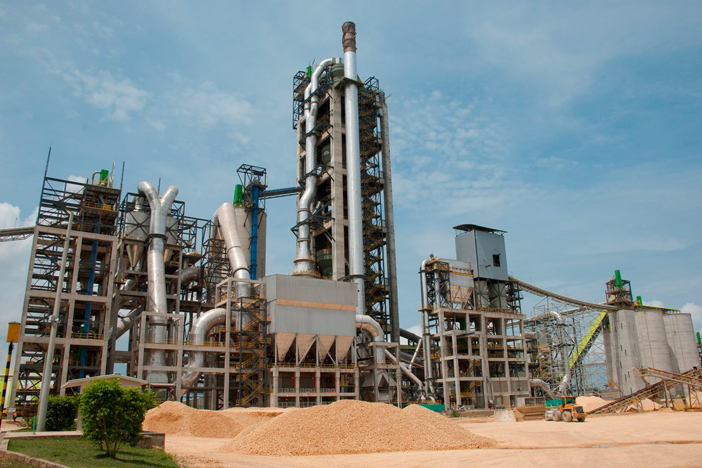

Maqueta para discusión · 19-oct-2026. El menú pasa a Nosotros · Proyectos ▾ · HSE y calidad · Noticias · Contacto. "Proyectos" sigue llevando al explorador; el botón ▾ abre el panel con Sectores (Cemento y Minería al frente) y Servicios (lista simple, sin prevalencia). El panel no carga fotos: solo las ilustraciones de línea que ya tiene el sitio, así no pesa en cada página. Pasa el cursor por las celdas.
1 Barra con el panel de Proyectos abierto (escritorio)
"Proyectos" es un enlace y ▾ es un botón aparte. El panel se abre con clic o teclado (Enter, Espacio, flecha abajo) y se cierra con Esc, clic fuera o al salir del foco. No se abre al pasar el cursor: en tabletas fallaría.
Al abrirse, el panel baja como un barrido (clip-path, .45 s) y una cota ámbar se mide bajo "Proyectos".
Cemento y Minería se llevan dos celdas con su dibujo y una cifra; al pasar se llenan de violeta y el dibujo pasa a blanco. Los otros cuatro van en una línea, separados por rombos.
Servicios va en una lista simple por grupo (A, B, C), sin dibujos ni cifras.
En móvil, Proyectos se despliega dentro del menú; el resto de entradas no tiene submenú.
El número de proyectos por sector cuenta solo los publicables: Minería muestra 3 porque Cobre Panamá es discreta (D6).
2 Página /sectores/: escenario para Cemento y Minería, índice para el resto
L-04Sectores
Industria queconocemos por dentro
Desde 1968 construimos y montamos plantas de cemento y de proceso minero. También trabajamos en agua y energía, petróleo y gas, infraestructura e industria. (Texto provisional.)
6 sectores · 20 proyectos

S-01Sector principal
Planta Columbus · Cartagena
S-01 · Cemento3 países
Cemento
Montaje electromecánico y obras civiles de líneas productoras de cemento, en Colombia y en el exterior.